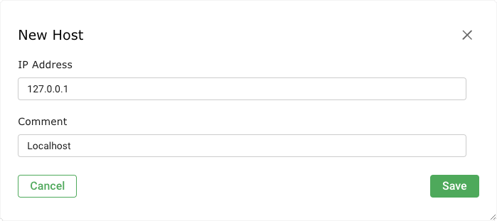
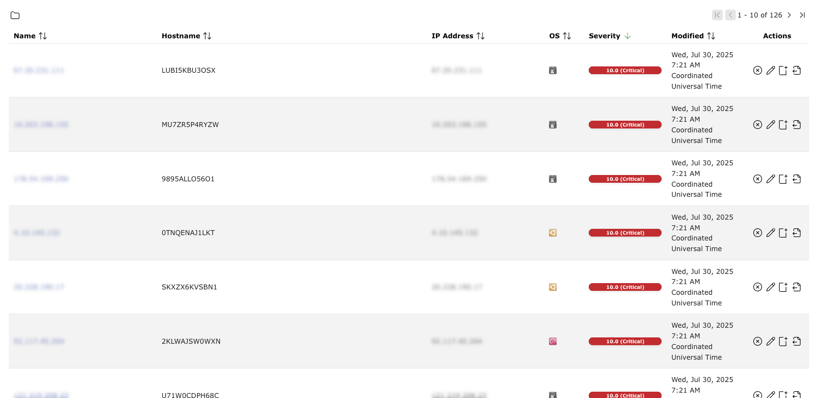
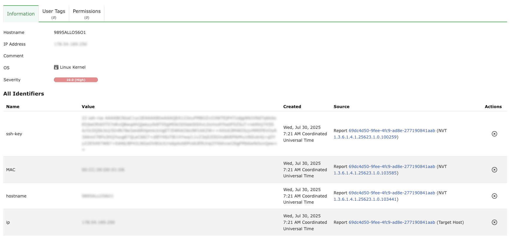
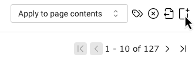
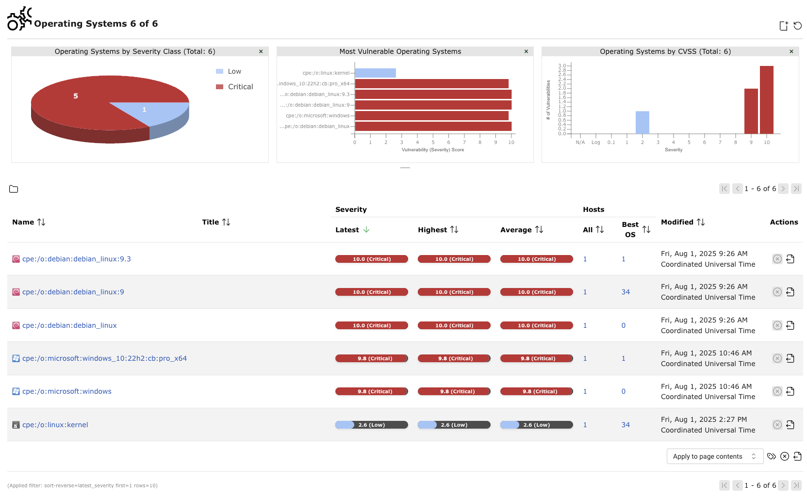
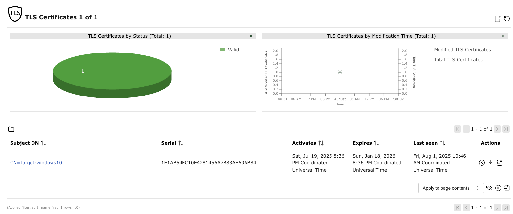

12 Управление активами¶
К активам относятся хосты, операционные системы и сертификаты TLS. Они заехали во время обнаружения уязвимостей.
При создании новой задачи можно указать, должны ли данные хоста, собранные во время сканирования, храниться в базе данных активов (см. главу 9.2.2). Подробности сохраняются, если используются параметры задачи по умолчанию.
12.1 Создание и управление хостами¶
Во время сбора информации о каждом сканируемом хосте. Хосты идентифицируются по своим IP-адресам.
Для каждого идентифицированного хоста проверяется, существует ли он уже в активах хостов. Если нет, создается новый хост-актив.
Как при сканировании вновь созданного хоста, так и при сканировании существующего хоста к ресурсному хосту в качестве идентификаторов включаются некоторые сведения о хосте (имена хостов, IP- и MAC-адреса, операционные системы, ключи SSH и сертификаты X.509).
Если виртуальный хост сканирование включено – что включено по умолчанию – (см. главу 9.13.4), каждый виртуальный хост будет добавлен как активная отдельная запись. Таким образом, из-за внешних виртуальных хостов идентификаторы IP-адресов могут появляться несколько раз. Такие активы затем должны существовать по другим идентификаторам хоста.
12.1.1 Создание хоста¶
Хосты также можно вручную добавлять в систему управления активами, чтобы создавать из них целевые объекты (см. главу 12.1.3).
За исключением IP-адреса, никакие другие сведения о хосте не могут быть ограничены, но дополнительные сведения будут добавлены при сканировании хоста, добавленного вручную.
Хост можно создать следующим образом:
Выбирать Активы > Хосты в меню.
Создайте новый хост, нажав
 в левом верхнем углу страницы.
в левом верхнем углу страницы.Введите IP-адрес хоста в поле ввода. Имя (видеть Рис. 12.1).

Рис. 12.1 Создание нового хоста¶
Нажмите Сохранять.

Эта функция также доступна через GMP (см. главу 14). С помощью этой опции можно импортировать хосты из базы данных управления конфигурацией.
12.1.2 Управление хостами¶
Страница списка
Все существующие хосты можно отобразить, выбрав Активы > Хосты в меню (см. Рис. 12.2).


Рис. 12.2 Страница Хозяева отображение всех сканированных хостов¶
Для всех хостов доступны следующие действия:
 Удалить хост.
Удалить хост. Отредактируйте хост.
Отредактируйте хост.- Создайте новую цель на хосте (см. главу 12.1.3).
 Экспортируйте хост как файл XML.
Экспортируйте хост как файл XML.
Примечание
Нажав , или под списком хостов можно одновременно удалить, экспортировать или использовать более одного хоста для создания новой цели. Раскрывающийся список используется для выбора хостов, которые следует удалить, экспортировать или использовать для создания новой цели.
Страница сведений
Нажмите на имя хоста, чтобы отобразить подробную информацию о хосте. Нажмите  чтобы открыть страницу сведений о хосте.
чтобы открыть страницу сведений о хосте.
Доступны следующие вкладки:
- Информация
Общая информация о хостере.
Любая определяющая информация, собранная для хоста во время обращения, например, имена хостов, IP- и MAC-адреса, операционные системы, ключи SSH и сертификаты X.509, как указано в разделе. Все идентификаторы (видеть Рис. 12.3).
Примечание
Если идентификаторы имеют дубликаты, отображаются только самые последние идентификаторы. В данном случае раздел называется Последние идентификаторы и все идентификаторы можно отобразить, нажав Показать все идентификаторы под столом.
Для всех идентификаторов хостов доступно следующее действие:
- Удалить идентификатор.

Рис. 12.3 Все идентификаторы¶
- Пользовательские теги
Присвоенные теги (см. главу 7.4).
- Разрешения
Назначенные разрешения (см. главу 8.4).
В левом верхнем углу доступны следующие действия:

 Откройте соответствующую главу руководства пользователя.
Откройте соответствующую главу руководства пользователя. Показать страницу со списком всех хостов.
Показать страницу со списком всех хостов.- Создайте новый хост (см. главу 12.1.1).
- Отредактируйте хост.
 Удалить хост.
Удалить хост.- Экспортируйте хост как файл XML.
 Покажите соответствующие результаты.
Покажите соответствующие результаты.
12.1.3 Создание цели из хостов¶
Таргет с набором хостов можно создать следующим образом:
Отфильтруйте хосты так, чтобы отображались только те хосты, которые следует использовать для целей (например, только хосты Microsoft Windows) (см. главу) 7.3).
Создайте новую цель, нажав
под списком хостов (см. Рис. 12.4).→ Откроется окно создания цели. Поле ввода Хозяева предварительно заполняется набором отображаемых хостов.

Рис. 12.4 Создание таргета с отображаемыми хостами¶
Определите цель и нажмите Сохранять.
Кончик
Информацию для ввода в поля ввода см. в главе. 9.2.1.
Примечание
Если при дальнейшем сканировании обнаружатся дополнительные подходящие хосты, они будут нет быть добавлен к цели.

12.2 Управление операционными системами¶
Представление операционной системы в управлении активами обеспечивает другой взгляд на хранимые данные. Хотя представление хостов сосредоточено на отдельных хостах, в этом представлении основное внимание уделяется операционным системам, обнаруженным во время всех сканирований уязвимостей.
Примечание
Для надежного обнаружения излучателей системы в AK-SHUMKAR ENTERPRISE FEED должны быть доступны VT(ы), связанные с обзорной системой(ами). Если присутствует конкретное VT, устройство все равно пытается определить операционную систему(ы), но идентификация происходит с более низким качеством обнаружения и склонностью к ложноположительным обнаружениям.
Страница списка
Все операционные системы можно отобразить, выбрав Активы > Операционные системы в меню (см. Рис. 12.5).
Для всех операционных систем отображается следующая информация:
- Имя
CPE (см. главу 13.2.2) операционной системы.
- Заголовок
Простое имя операционной системы.
- Серьезность – последняя
Серьезность, обнаруженная для операционной системы во время последнего сканирования, обнаружившего эту операционную систему на хосте. Учитываются только хосты, соответствующая операционная система которых признана наиболее подходящей.
- Серьезность – самая высокая
Для операционной системы обнаружен самый высокий уровень серьезности во время всех проверок, обнаруживших эту операционную систему на узле. Учитываются только хосты, соответствующая операционная система которых признана наиболее подходящей.
- Серьезность – средняя
Средняя серьезность обнаружена для операционной системы во время всех проверок, обнаруживших эту операционную систему на узле. Учитываются только хосты, соответствующая операционная система которых признана наиболее подходящей.
- Хозяева – Все
Все хосты, на которых была обнаружена операционная система. При нажатии на количество хостов страница Хозяева открыт. Применяется фильтр для отображения только тех хостов, для которых была обнаружена выбранная операционная система.
- Хосты – Лучшая ОС
Хосты, операционная система которых была признана наиболее подходящей. При нажатии на количество хостов страница Хозяева открыт. Применяется фильтр, чтобы показать только те хосты, для которых выбранная операционная система была признана наиболее подходящей.
- Модифицированный
Дата и время последнего изменения.


Рис. 12.5 Страница Операционные системы отображение всех сканированных операционных систем¶
Для всех операционных систем доступны следующие действия:
- Удалить операционную систему. Удалить можно только те операционные системы, которые в данный момент не используются.
- Экспортируйте операционную систему в виде XML-файла.
Примечание
Нажав или под списком операционных систем одновременно можно удалить или экспортировать более одной операционной системы.
Раскрывающийся список используется для выбора операционных систем, которые необходимо удалить или экспортировать.
Страница сведений
Нажмите на название операционной системы, чтобы открыть страницу сведений об операционной системе.
Доступны следующие вкладки:
- Информация
Общие сведения об операционной системе.
- Пользовательские теги
Присвоенные теги (см. главу 7.4).
- Разрешения
Назначенные разрешения (см. главу 8.4).
В левом верхнем углу доступны следующие действия:
- Откройте соответствующую главу руководства пользователя.
- Показать страницу списка всех операционных систем.
- Удалить операционную систему. Удалить можно только те операционные системы, которые в данный момент не используются.
- Экспортируйте операционную систему в виде XML-файла.
(слева) Показать хосты, для которых была обнаружена операционная система.
(справа) Показать хосты, для которых операционная система лучше всего подходит.

12.3 Управление сертификатами TLS¶
В представленном здесь основное внимание уделяется сертификатам TLS, составленным во время всех сканирований на уязвимости, и приводится краткий обзор того, действительны ли они или срок их действия истек.
Примечание
Включена только основная информация о сертификате (хост, порт, даты активации и срока действия, отпечатки пальцев).
Функциональность протокола выдачи онлайн-сертификатов (OCSP) или записи отзыва сертификатов (CRL) не происходит.
Страница списка
Все последующие сертификаты TLS можно отобразить, выбрав Активы > Сертификаты TLS в меню (см. Рис. 12.6).
Для всех TLS-сертификатов доступны следующие действия:
- Удалите сертификат TLS.
 Загрузите сертификат TLS.
Загрузите сертификат TLS.- Экспортируйте сертификат TLS в видео XML-файла.
Примечание
Нажав или под списком сертификатов TLS одновременно можно удалить или экспортировать более одного сертификата TLS.
Раскрывающийся список используется для выбора сертификатов TLS, которые необходимо удалить или экспортировать.


Рис. 12.6 Страница TLS-сертификаты оформление всех готовых TLS-сертификатов¶
Страница сведений
Нажмите на имя сертификата TLS, чтобы отобразить подробную информацию о сертификате TLS. Нажмите чтобы открыть страницу сведения о сертификате TLS.
Доступны следующие вкладки:
- Информация
Общая информация о сертификате TLS.
- Пользовательские теги
Присвоенные теги (см. главу 7.4).
- Разрешения
Назначенные разрешения (см. главу 8.4).
В левом верхнем углу доступны следующие действия:
- Откройте соответствующую главу руководства пользователя.
- Показать страницу списка всех сертификатов TLS.
- Удалите сертификат TLS.
- Загрузите сертификат TLS.
- Экспортируйте сертификат TLS в видео XML-файла.